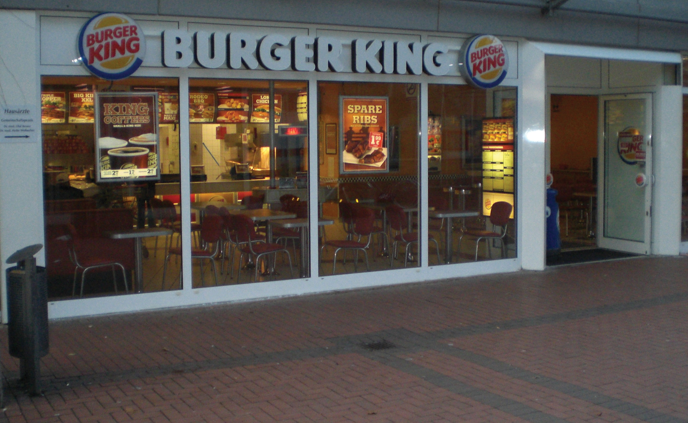

As the U.S. economy has changed from a goods producer to a service provider, the predominance of the manufacturing sector has declined substantially over the last sixty years. Today, only about 9 percent of U.S. workers are employed in manufacturing, in contrast to 30 percent in 1950.“Avoiding an American ‘Lost Decade,’” The Global Language Monitor, November 3, 2010, http://www.languagemonitor.com/tag/percentage-of-the-non-farm-payroll-in-manufacturing/ (accessed November 2, 2011); William Strauss, “Is U.S. Manufacturing Disappearing?,” Federal Reserve Bank of Chicago, August 19, 2010, http://midwest.chicagofedblogs.org/archives/2010/08/bill_strauss_mf.html#footnote2 (accessed November 2, 2011). Most of us now hold jobs in the service sector, which accounts for 77 percent of U.S. gross domestic product.“International Monetary Fund, World Economic Outlook Database, April 2011: Nominal GDP List of Countries. Data For The Year 2010,” International Monetary Fund, http://www.imf.org/external/pubs/ft/weo/2011/01/weodata/index.aspx (accessed November 2, 2011); Wikipedia, s.v. “List of Countries by GDP Sector Composition,” http://en.wikipedia.org/wiki/List_of_countries_by_GDP_sector_composition (accessed November 2, 2011). Wal-Mart is now America’s largest employer, followed by IBM, United Parcel Service (UPS), McDonald’s, and Target. Not until we drop down to the seventh-largest employer—Hewlett Packard—do we find a company with even a manufacturing component.“America’s Ten Largest Employers,” 24/7 Wall Street, April 10, 2011, http://247wallst.com/2011/04/24/americas-ten-largest-employers/#ixzz1ayiE71Sr (accessed November 2, 2011).
Though the primary function of both manufacturers and service providers is to satisfy customer needs, there are several important differences between the two types of operations. Let’s focus on three of them:
Figure 11.10
Here is just one of the over twelve thousand Burger King restaurants across the globe.
Not surprisingly, operational efficiency is just as important in service industries as it is in manufacturing. To get a better idea of the role of operations management in the service sector, we’ll look closely at Burger King (BK), home of the Whopper, and the world’s second-largest restaurant chain.“Press Room,” Burger King, http://www.bk.com/en/us/company-info/press/index.html (accessed November 2, 2011). BK has grown substantially since selling the first Whopper (for $0.37) almost half a century ago. The instant success of the fire-grilled burger encouraged the Miami founders of the company to expand by selling franchises. Today, there are 12,200 BK company- and independently-owned franchised restaurants in seventy-three countries (seven thousand of which are in the United States), and they employ almost forty thousand people.SEC, 10K SEC Filings, Burger King Corporation, August 2010, http://services.corporate-ir.net/SEC.Enhanced/SecCapsule.aspx?c=87140&fid=7105569 (accessed November 3, 2011). More than eleven million customers visit BK each day.“Press Room,” Burger King, http://www.bk.com/en/us/company-info/press/index.html (accessed November 2, 2011).
When starting or expanding operations, businesses in the service sector must make a number of decisions quite similar to those made by manufacturers:
Let’s see how service firms like BK answer questions such as these.Information on Burger King was obtained from an interview with David Sell, former vice president of Central, Eastern, and Northern Europe divisions and president of Burger King France and Germany.
Service organizations succeed by providing services that satisfy customers’ needs. Companies that provide transportation, such as airlines, have to get customers to their destinations as quickly and safely as possible. Companies that deliver packages, such as FedEx, must pick up, sort, and deliver packages in a timely manner. Colleges must provide quality educations. Companies that provide both services and goods, such as Domino’s Pizza, have a dual challenge: they must produce a quality good and deliver it satisfactorily.
Service providers that produce goods can, like manufacturers, adopt either a make-to-order or a make-to-stock approach to manufacturing them. BK, which encourages patrons to customize burgers and other menu items, uses a make-to-order approach. BK can customize products because it builds sandwiches one at a time rather than batch-process them. Meat patties, for example, go from the grill to a steamer for holding until an order comes in. Then the patty is pulled from the steamer and requested condiments are added. Finally, the completed sandwich chutes to a counter worker, who gives it to the customer. In contrast, many of BK’s competitors, including McDonald’s, rely on a make-to-stock approach in which a number of sandwiches are made at the same time with the same condiments. If a customer wants, say, a hamburger without onions, he or she has to wait for a new batch of patties to be grilled. The procedure could take up to five minutes, whereas BK can process a special order in thirty seconds.
Like manufacturers, service providers must continuously look for ways to improve operational efficiency. Throughout its sixty-year history, BK has introduced a number of innovations that have helped make the company (as well as the fast-food industry itself) more efficient. BK, for example, was the first to offer drive-through service (which now accounts for 70 percent of its salesBob Krummert, “Burger King: Headed For A Fast-Casual Flameout?,” Restaurant Hospitality, http://restaurant-hospitality.com/news/burger-king-headed-flameout-1019/ (accessed November 3, 2011). ).
It was also a BK vice president, David Sell, who came up with the idea of moving the drink station from behind the counter so that customers could take over the time-consuming task of filling cups with ice and beverages. BK was able to cut back one employee per day at every one of its more than eleven thousand restaurants. Material costs also went down because customers usually fill cups with more ice, which is cheaper than a beverage. Moreover, there were savings on supply costs because most customers don’t bother with lids, and many don’t use straws. On top of everything else, most customers liked the system (for one thing, it allowed them to customize their own drinks by mixing beverages), and as a result, customer satisfaction went up, as well. Overall, the new process was a major success and quickly became the industry standard.
When starting or expanding a service business, owners and managers must invest a lot of time in selecting a location, determining its size and layout, and forecasting demand. A poor location or a badly designed facility can cost customers, and inaccurate estimates of demand for products can result in poor service, excessive costs, or both.
People in the real estate industry often say that the three most important factors to consider when you’re buying a home are location, location, location. The same principle applies when you’re trying to locate a service business. To be successful in a service industry, you need to be accessible to your customers. Some service businesses, such as cable-TV providers, package-delivery services, and e-retailers, go to their customers. Many others, however—hotels, restaurants, stores, hospitals, and airports—have to attract customers to their facilities. These businesses must locate where there’s a high volume of available customers. Let’s see how BK decides where to place a restaurant.
“Through the light and to the right.” This is a favorite catchphrase among BK planners who are looking for a promising spot for a new restaurant (at least in the United States). In picking a location, BK planners perform a detailed analysis of demographics and traffic patterns, yet the most important factor is usually traffic count—the number of cars or people that pass by a specific location in the course of a day. In the United States, where we travel almost everywhere by car, BK looks for busy intersections, interstate interchanges with easy off and on ramps, or such “primary destinations” as shopping malls, tourist attractions, downtown business areas, or movie theaters. In Europe, where public transportation is much more common, planners focus on subway, train, bus, and trolley stops.
Once planners find a site with an acceptable traffic count, they apply other criteria. It must, for example, be easy for vehicles to enter and exit the site, which must also provide enough parking to handle projected dine-in business. Local zoning must permit standard signage, especially along interstate highways. Finally, expected business must be high enough to justify the cost of the land and building.
Because manufacturers do business out of plants rarely visited by customers, they base the size and layout of their facilities solely on production needs. In the service sector, however, most businesses must design their facilities with the customer in mind: they must accommodate the needs of their customers while keeping costs as low as possible. Performing this twofold task isn’t easy. Let’s see how BK has met the challenge.
For its first three decades, almost all BK restaurants were pretty much the same. They all sat on one acre of land (located “through the light and to the right”), had about four thousand square feet of space, and held seating for seventy customers. All kitchens were roughly the same size. As long as land was cheap and sites were readily available, this system worked well enough. By the early 1990s, however, most of the prime sites had been taken, if not by BK itself, then by one of its fast-food competitors or other businesses needing a choice spot, including gas stations and convenience stores. With everyone bidding on the same sites, the cost of a prime acre of land had increased from $100,000 to over $1 million in a few short years.
To continue growing, BK needed to change the way it found and developed its locations. Planners decided that they had to find ways to reduce the size of a typical BK restaurant. For one thing, they could reduce the number of seats, because the business at a typical outlet had shifted over time from 90 percent inside dining and 10 percent drive-through to a 50-50 split. BK customers tended to be in a hurry, and more customers preferred the convenience of drive-through “dining.”
David Sell (the same executive who had recommended letting customers fill their own drink cups) proposed to save space by wrapping Whoppers in paper instead of serving them in the cardboard boxes that took up too much space in the back room of every restaurant. So BK switched to a single paper wrapper with the label “Whopper” on one side and “Cheese Whopper” on the other. To show which product was inside, employees just folded the wrapper in the right direction. Ultimately, BK replaced pallets piled high with boxes with a few boxes full of wrappers.
Ideas like these helped BK trim the size of a restaurant from four thousand square feet to as little as one thousand. In turn, smaller facilities enabled the company to enter markets that were once cost prohibitive. Now BK could locate profitably in airports, food courts, strip malls, center-city areas, and even schools. The company even designed 10-foot-by-10-foot kiosks that could be transported to special events, stadiums, and concerts.
Estimating capacity needs for a service business isn’t the same thing as estimating those of a manufacturer. A manufacturer can predict overall demand, produce the product, store it in inventory, and ship it to a customer when it’s ordered. Service providers, however, can’t store their products for later use: hairdressers can’t “inventory” haircuts, hospitals can’t “inventory” operations, and amusement parks can’t “inventory” roller-coaster rides. Service firms have to build sufficient capacity to satisfy customers’ needs on an “as-demanded” basis. Like manufacturers, service providers must consider many variables when estimating demand and capacity:
Forecasting demand is easier for companies like BK, which has a long history of planning facilities, than for brand-new service businesses. BK can predict sales for a new restaurant by combining its knowledge of customer-service patterns at existing restaurants with information collected about each new location, including the number of cars or people passing the proposed site and the effect of nearby competition.
Overseeing a service organization puts special demands on managers, especially those running firms, such as hotels, retail stores, and restaurants, that have a high degree of contact with customers. Service firms provide customers with personal attention and must satisfy their needs in a timely manner. This task is complicated by the fact that demand can vary greatly over the course of any given day. Managers, therefore, must pay particular attention to employee work schedules and (in some cases) inventory management. Let’s see how BK deals with these problems.
In manufacturing, managers focus on scheduling the activities needed to transform raw materials into finished goods. In service organizations, they focus on scheduling workers so that they’re available to handle fluctuating customer demand. Each week, therefore, every BK store manager schedules employees to cover not only the peak periods of breakfast, lunch, and dinner, but also the slower periods in between. If he or she staffs too many people, labor cost per sales dollar will be too high. If there aren’t enough employees, customers have to wait in lines. Some get discouraged, and even leave, and many may never come back.
Scheduling is made easier by information provided by a point-of-sale device built into every BK cash register. The register keeps track of every sandwich, beverage, and side order sold by the hour, every hour of the day, every day of the week. Thus, to determine how many people will be needed for next Thursday’s lunch hour, the manager reviews last Thursday’s data, using sales revenue and a specific BK formula to determine the appropriate staffing level. Each manager can adjust this forecast to account for other factors, such as current marketing promotions or a local sporting event that will increase customer traffic.
Businesses that provide both goods and services, such as retail stores and auto-repair shops, have the same inventory-control problems as manufacturers: keeping levels too high costs money, while running out of inventory costs sales. Technology, such as the point-of-sale registers used at BK, makes the job easier. BK’s system tracks everything sold during a given time and lets each store manager know how much of everything should be kept in inventory. It also makes it possible to count the number of burgers and buns, bags and racks of fries, and boxes of beverage mixes at the beginning or end of each shift. Because there are fixed numbers of supplies—say, beef patties or bags of fries—in each box, employees simply count boxes and multiply. In just a few minutes, the manager knows whether the inventory is correct (and should be able to see if any theft has occurred on the shift).
(AACSB) Analysis
Starting a new business can be an exciting adventure. Here’s your chance to start a “pretend” business. Select a service business that you’d like to open, and answer these questions. Provide an explanation for each answer: